การออกแบบระบบตัวเลข Floating-Point ต้องทำการชั่งน้ำหนักระหว่างขนาดของส่วน Fraction และส่วน Exponent เนื่องด้วยทั้งสองส่วนเป็นการนำเสนอตัวเลขเดียวกันในขนาดที่จำกัด การที่จะเพิ่มขนาดของส่วนหนึ่งไป 1 บิต หมายถึงการลดขนาดของอีกส่วนหนึ่งลงหนึ่งบิต ซึ่งเป็นการแลกเปลี่ยนระหว่างความละเอียดและช่วงการนำเสนอของตัวเลข การเพิ่ม Fraction เป็นการเพิ่มความละเอียดในการคำนวณ ในขณะที่การเพิ่ม Exponent เป็นการเพิ่มย่านการทำงาน โดยทั่วไปการใช้งาน Floating Point จะประกอบด้วยหลาย Word โดยจะได้แสดงต่อไป 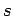 เป็นเครื่องหมายของเลข Floating Point ถ้า มีค่าเท่ากับหนึ่งหมายถึงเป็นเลขลบ ส่วนของ Exponent มีขนาดเท่ากับ 8-bit (รวมกับเครื่องหมายของ Exponent นั้นๆ ด้วย) ส่วนของ Fraction มีขนาด 23-bit ลักษณะการนำเสนอนี้เรียกว่า Sign and Magnitude เนื่องจากมีการแยกเครื่องหมายบวกลบใน Sign Bit ออกาจากตัวเลข
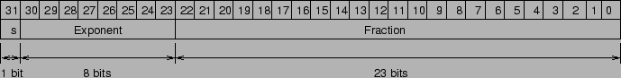
โดยทั่วไประบบเลข Floating Point จะแสดงอยู่ในรูปของ
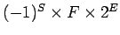
F เป็นค่าที่ได้มาจากส่วนของ Fraction และ E เป็นค่าที่ได้มาจากส่วนของ Exponent
จากการแสดงตัวเลข Floating point ที่กล่าวมา คอมพิวเตอร์ MIPS สามารถแสดงค่าในช่วงที่กว้างมาก ตั้งแต่ 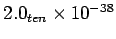 ถึง 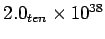 ถึงแม้ว่าจะเป็นค่าที่มาก แต่ยังมีโอกาสที่จะเกิดการ overflow ขึ้นได้เช่นเดียวกับการคำนวณจำนวนเต็ม การที่ตัวเลข Floating point เกิด overflow นั้น เกิดจากการที่ส่วนของ Exponent มีค่าเกินที่สามารถแสดงได้ ในกรณีที่ค่าของ Exponent มีค่าเป็นลบน้อยกว่าที่สามารถจะแสดงได้ ในกรณีนี้เรียกว่า underflow
ในกรณีที่ต้องการขยายช่วงการทำงานของเลข Floating Point เพิ่มขึ้น เพื่อช่วยในการลดโอกาสที่จะเกิด Overflow และเพิ่มความละเอียดในการคำนวณ รูปแบบอีกรูปแบบหนึ่งของการนำเสนอการแสดงค่า Floating Point ได้แก่รูปแบบ Double Precision โดยการนำเสนอแบบก่อนหน้าเรียกว่าการนำเสนอแบบ Single Precision
การนำเสนอแบบ Double Precision ใช้ขนาดของ Word ในคอมพิวเตอร์ MIPS เป็นจำนวนสอง Words โดยที่ยังใช้งาน 1 bit สำหรับเป็นเครื่องหมาย และมีขนาดของ Exponent เท่ากับ 11 บิต และขนาดของ Fraction เท่ากับ 52 บิต แสดงดังต่อไปนี้
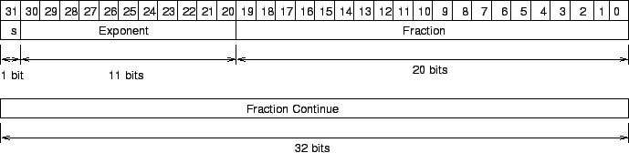
การแสดงตัวเลข Double Precision สามารถแสดงตัวเลขได้ในย่านของ 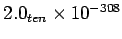 ถึง 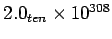 นอกจากการทำงานของระบบตัวเลข Double Precision จะเพิ่มย่านการทำงานแล้ว ระบบตัวเลข Double Precision ยังมีส่วนของที่เป็น Fraction กว้างมากทำให้สามารถคำนวณได้ละเอียดมากขึ้น
รูปแบบการนำเสนอทั้งสองลักษณะดังกล่าวเป็นรูปแบบส่วนหนึ่งของมาตรฐาน IEEE 754 ที่มีการเริ่มใช้งานมาตั้งแต่ปี 1980
การแสดงค่าของตัวเลข Normalized อยู่ในรูปของ 1.xxxxx ในมาตรฐาน IEEE 754 ได้ตัด 1 ตัวหน้าออกไปจากการนำเสนอตัวเลข เพราะฉะนั้นจะประหยัดได้หนึ่งบิต โดยทำการสำรอง Exponent ที่มีค่าเท่ากับ 0 สำหรับตัวเลข 0 เพื่อที่ฮาร์ดแวร์จะไม่ได้นำเลข 1 มานำหน้า ดังนั้น
 แทนค่า 0 และตัวเลขอื่นๆ สามารถคำนวณได้จาก
แทนค่า 0 และตัวเลขอื่นๆ สามารถคำนวณได้จาก
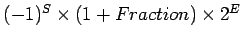
โดยที่บิตในส่วนของ Fraction แสดงค่าระหว่าง 0 กับ 1 และ E แสดงค่าของ Exponent ถ้าให้บิตจากซ้ายมาขวาของส่วน Fraction เป็น 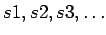 จะได้
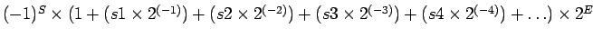
สำหรับเลขอนันต์ หรือ เลขที่ไม่สามารถแสดงค่าได้นั้น ในมาตรฐาน IEEE 754 กำหนดสัญญลักษณ์ 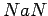 หรือ Not a Number ในรูป 3.13 แสดงรูปแบบของ มาตรฐาน IEEE 754 ในการแสดงค่า Floating Point ในย่านต่างๆ
การเปรียบเทียบเลขในใช้งานระบบเลข Floating-Point เป็นการดำเนินการที่สำคัญอันหนึ่ง เช่น ใช้งานการเรียงเลขมากไปหาน้อยหรือน้อยไปหามาก เริ่มแรกสามารถเปรียบเทียบได้จากค่าของ Exponent ถ้าเลข Exponent มีค่ามากกว่า หมายถึงเลขนั้นมีค่ามากกว่า ตราบใดที่ Exponent มีเป็นบวกเครื่องหมายเหมือนกัน
ในกรณีที่ Exponent มีเครื่องหมายเป็นลบได้ด้วยจะส่งผลให้เกิดความยุ่งยากในการเปรียบเทียบตัวเลข เช่น 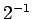 มีค่า Exponent เป็น 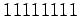 และ
 มีค่า Exponent เป็น 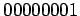
มีค่า Exponent เป็น 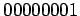
การนำเสนอตัวเลข Floating-Point ที่เหมาะสมนั้นใช้ เลขที่ลบน้อยที่สุดให้เป็น 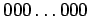 และ เลขบวกมากที่สุดให้เป็น 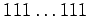 ซึ่งเรียกว่า Biased Notation โดยค่า bias จะนำมาลบออกจากค่าปกติที่เป็น Unsigned เพื่อให้ได้ค่ามี่ถูกต้อง
IEEE 754 ใช้ค่า bias เป็นค่า 127 สำหรับ Single Precision และ 1023 สำหรับค่า Double Precision ค่า Floating Point สามารถคำนวณได้จาก
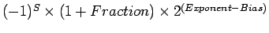